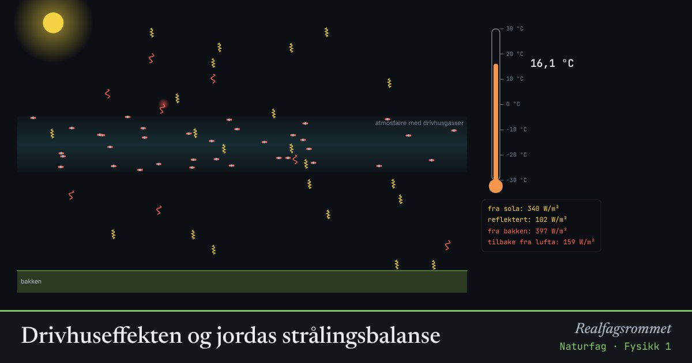

Drivhuseffekten og jordas strålingsbalanse
Sollys varmer bakken. Bakken sender ut infrarød stråling. Drivhusgasser fanger noe av den og sender den tilbake. Mer CO₂ gir en varmere overflate.
Start animasjonen
Formler
Om animasjonen
De gule bølgene er sollys. Noe reflekteres av skyer, is og snø (albedo). Resten varmer bakken.
Bakken sender ut infrarød stråling (rød). Drivhusgasser som CO₂ og vanndamp absorberer noe av den og sender den ut igjen i alle retninger, også ned mot bakken.
Uten drivhuseffekt ville gjennomsnittstemperaturen vært omtrent −18 °C. Modellen her er en forenklet ettlagsmodell. Den viser mekanismen, men ikke alle tilbakekoblinger i klimasystemet.
Is som smelter gir lavere albedo. Da tar jorda opp mer sollys, og det blir enda varmere. Det er en positiv tilbakekobling.
Prøv dette
- Hvor mye øker temperaturen i modellen når CO₂ dobles fra 280 til 560 ppm?
- Sett albedo til 0,6, som en jord dekket av is. Hva skjer?
- Forklar hvorfor drivhusgasser slipper sollyset gjennom, men stopper infrarød stråling.
- Finn ut hva CO₂-nivået var i 1850 og i dag. Hvor kommer økningen fra?
Kompetansemål
- Naturfag: Klimaendringer, utbredelse av arter og biologisk mangfold
- Geografi: Klimaendringer og karbonkretsløpet
- Fysikk 1: Påstander og argumenter om energi og klima
- Fysikk 1: Jordas strålingsbalanse
- Biologi 1: Klima, arealbruk og bærekraftig forvaltning
Mer om stråling, atomer og kjerner
- Det elektromagnetiske spekteret
- Stråling fra varme legemer
- Stråling og overflate: hvorfor blir svart varmere?
- Rutherfords spredningsforsøk
- Bohrs atommodell og linjespektre
- Radioaktivt henfall og halveringstid
- Fusjon, fisjon og stjernenes grunnstoffer
- Stjernenes liv og grunnstoffenes opphav
Mer om klima, miljø og bærekraft
- Karbonkretsløpet og CO₂ i atmosfæren
- Havforsuring: CO₂ gjør havet surere
- Klimaendringer og artenes utbredelse
- Miljøgifter hoper seg opp i næringskjeden
- Rovdyr og byttedyr
- Energistrøm og næringskjeder
- Grønn kjemi: atomøkonomi
- Årstider, dagslengde og solinnstråling
- Regnskygge og føhn: hvorfor Bergen er våtere enn Oslo
- Flom: regn, jord og asfalt